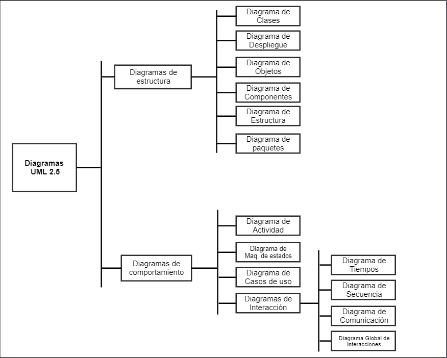

UD 5 - 5.1 ¿Qué es UML?
5.1. ¿Qué es UML?¶
El Lenguaje Unificado de Modelado o UML («Unified Modeling Language») es un lenguaje estandarizado de modelado. Está especialmente desarrollado para ayudar a todos los intervinientes en el desarrollo y modelado de un sistema o producto software a describir, diseñar, especificar, visualizar, construir y documentar todos los artefactos que lo componen, utilizando varios tipos de diagramas.
1. Introducción¶
UML permite crear un diseño previo de una aplicación antes de su desarrollo e implementación, aunque también puede realizarse posteriormente.
🎯 NOTA: Similar al diseño arquitectónico de un edificio, UML facilita la visualización del sistema, su comparación con los requisitos y su comprensión antes de que el equipo de desarrollo comience a codificar.
El modelado con UML cobra especial importancia en proyectos grandes, garantizando que los diseños sean escalables, seguros y funcionales. Además, estos diagramas suelen acompañarse de documentación complementaria.

1.1. Ventajas y desventajas de UML¶
Ventajas:
- Es sencillo y visual.
- Permite modelar cualquier tipo de sistemas.
- Es un lenguaje universal que facilita la comunicación entre equipos.
- Es independiente de plataformas y lenguajes.
Desventajas: - Es muy amplio, lo que puede complicar su uso completo. - Los diagramas pueden omitir detalles importantes.
2. ¿Por qué UML?¶
UML ayuda a trabajar a un mayor nivel de abstracción y es independiente de la plataforma. Sus características principales son:
- Es fácilmente extensible, permitiendo adaptar los conceptos a distintas necesidades.
- Facilita la documentación y buenas prácticas en el desarrollo de software.
- Aunque no está completamente definido, es una herramienta poderosa para la representación gráfica.
Si estás comenzando con UML, puedes consultar esta lista de libros para aprender UML desde cero.
3. Tipos de diagramas UML¶

A día de hoy, en su versión 2.5.1, UML clasifica sus diagramas en:
3.1. Diagramas estructurales¶
Los diagramas estructurales muestran la estructura estática del sistema y sus partes en diferentes niveles de abstracción. Existen un total de siete tipos de diagramas de estructura:
- Diagrama de clases: Muestra la estructura del sistema, subsistema o componente utilizando clases con sus características, restricciones y relaciones: asociaciones, generalizaciones, dependencias, etc.
- Diagrama de componentes: Muestra componentes y dependencias entre ellos. Este tipo de diagramas se utiliza para el desarrollo basado en componentes (CDB), para describir sistemas con arquitectura orientada a servicios (SOA).
- Diagrama de despliegue: Muestra la arquitectura del sistema como despliegue (distribución) de artefactos de software.
- Diagrama de objetos: Un gráfico de instancias, incluyendo objetos y valores de datos. Un diagrama de objeto estático es una instancia de un diagrama de clase; muestra una instantánea del estado detallado de un sistema en un punto en el tiempo.
- Diagrama de paquetes: Muestra paquetes y relaciones entre ellos.
- Diagrama de perfiles: Diagrama UML auxiliar que permite definir estereotipos personalizados, valores etiquetados y restricciones como un mecanismo de extensión ligero al estándar UML. Los perfiles permiten adaptar el metamodelo UML para diferentes plataformas o dominios.
- Diagrama de estructura compuesta: Muestra la estructura interna (incluidas las partes y los conectores) de un clasificador estructurado.
3.2. Diagramas de comportamiento¶
A diferencia de los diagramas estructurales, muestran como se comporta un sistema de información de forma dinámica. Es decir, describe los cambios que sufre un sistema a través del tiempo cuando está en ejecución. Hay un total de siete diagramas de comportamiento, clasificados de la siguiente forma:
- Diagrama de actividades: Muestra la secuencia y las condiciones para coordinar los comportamientos de nivel inferior, en lugar de los clasificadores que poseen esos comportamientos. Estos son comúnmente llamados modelos de flujo de control y flujo de objetos.
-
Diagrama de casos de uso: Describe interacciones usuario-sistema. Describe un conjunto de acciones (casos de uso) que algunos sistemas o sistemas (sujetos) deben o pueden realizar en colaboración con uno o más usuarios externos del sistema (actores) para proporcionar algunos resultados observables y valiosos a los actores u otros interesados del sistema(s).
-
Diagrama de máquina de estados: Modela transiciones entre estados. Se utiliza para modelar el comportamiento discreto a través de transiciones de estados finitos. Además de expresar el comportamiento de una parte del sistema, las máquinas de estado también se pueden usar para expresar el protocolo de uso de parte de un sistema.
3.3. Diagramas de interacción¶
Los diagramas de interacción son un subconjunto de los diagramas de comportamiento que muestran cómo los objetos se comunican entre sí:
- Diagrama de secuencia: Es el tipo más común de diagramas de interacción y se centra en el intercambio de mensajes entre líneas de vida (objetos).
- Diagrama de comunicación: Se enfoca en la interacción entre líneas de vida donde la arquitectura de la estructura interna y cómo esto se corresponde con el paso del mensaje es fundamental. La secuencia de mensajes se da a través de una numeración.
- Diagrama de tiempos: Se centran en las condiciones que cambian dentro y entre las líneas de vida a lo largo de un eje de tiempo lineal.
- Diagrama global de interacciones: Los diagramas global de interacciones brindan una descripción general del flujo de control donde los nodos del flujo son interacciones o usos de interacción.
4. Versiones de UML¶
La versión actual de UML es la 2.5.1, publicada en diciembre de 2017. Este estándar es gestionado y actualizado por la OMG (Object Management Group). Los creadores originales de UML son 3: Jim Rumbaugh, Grady Booch e Ivar Jacobson.
4.1. Lista de versiones publicadas¶
Esta es la lista de versiones que han sido publicadas:
- 1.1 – Noviembre de 1997
- 1.3 – Marzo de 2000
- 1.4 – Septiembre de 2001
- 1.5 – Marzo de 2003
- 1.4.2 – Enero de 2005
- 2.0 – Octubre de 2005
- 2.1 – Abril de 2006
- 2.1.1 – Febrero de 2007
- 2.1.2 – Noviembre de 2007
- 2.2 – Febrero de 2009
- 2.3 – Mayo de 2010
- 2.4.1 – Agosto de 2011
- 2.5 – Junio de 2015
5. Breve historia de UML¶
Desde hace unos años, las tecnología de la información y comunicación ya han producido una enorme variedad de métodos y notaciones para llevar a cabo el modelado. Existen métodos y anotaciones para el diseño, la estructura, el procesamiento y el almacenamiento de información. De la misma manera también podemos encontrar métodos para la planificación, modelado, implementación, ensamblaje, prueba, documentación, ajuste, etc. de los sistemas. Entre los conceptos que se utilizan existen algunos relativamente fundamentales y, debido a eso, se expanden más allá del ámbito en el que fueron creados en un principio.
Desde la concepción de la tecnología de la información hasta finales de 1970, los desarrolladores de software se tomaron el desarrollo del software como un arte. Pero estos sistemas fueron poco a poco haciéndose más complejos y por esta razón el mantenimiento y el desarrollo exigía otro tipo de visión, más allá del previamente descrito. Este hecho dio lugar a la ya famosa crisis del software.
Esta crisis lleva al enfoque de ingeniería (ingeniería de software) y la programación estructurada. Se desarrollaron métodos para la estructuración de sistemas y para los procesos de diseño, desarrollo y mantenimiento. Los enfoques orientados a procesos, por ejemplo, el método de salida de procesamiento de entrada de jerarquía, enfatizaron la funcionalidad de los sistemas. Con este método, el sistema total se divide en componentes más pequeños a través de la descomposición funcional.
Al mismo tiempo, se desarrollaron enfoques orientados a la estructura de datos, como el método de Jackson, en el que la estructura del programa se deriva de la visualización gráfica de las estructuras de datos.
En todos estos métodos y notaciones, dividimos el sistema en dos partes: una sección de datos y una sección de procedimientos. Esto es claramente reconocible en lenguajes de programación más antiguos, como COBOL. Los diagramas de flujo de datos, los diagramas de estructura, los diagramas HIPO y los diagramas de Jackson se utilizan para ilustrar el rango de funciones. Naturalmente, estos primeros métodos enfatizaron el desarrollo de nuevos sistemas.
En la década de 1980, el análisis estructural clásico se desarrolló aún más. Los desarrolladores generaron diagramas de relaciones de entidades para el modelado de datos y redes de Petri para el modelado de procesos.
A medida que los sistemas se volvieron más complejos, ya no se podría diseñar cada sistema «desde cero». Las propiedades, como la mantenibilidad y la reutilización, se hicieron cada vez más importantes. Se desarrollaron lenguajes de programación orientados a objetos, y con ellos, los primeros lenguajes de modelado orientados a objetos surgieron en los años 70 y 80. En la década de 1990, las primeras publicaciones sobre análisis orientado a objetos y diseño orientado a objetos se pusieron a disposición del público. A mediados de la década de 1990, ya existían más de 50 métodos orientados a objetos, así como muchos formatos de diseño. Un lenguaje de modelado unificado parecía indispensable.
A principios de la década de 1990, los métodos orientados a objetos de Grady Booch y James Rumbaugh se utilizaron ampliamente. En octubre de 1994, Rational Software Corporation (parte de IBM desde febrero de 2003) comenzó la creación de un lenguaje de modelado unificado. Primero, acordaron una estandarización de la notación (lenguaje), ya que esto parecía menos elaborado que la estandarización de los métodos. Al hacerlo, integraron el Método Booch de Grady Booch, la Técnica de modelado de objetos (OMT) de James Rumbaugh y la Ingeniería de software orientada a objetos (OOSE), de Ivar Jacobsen, con elementos de otros métodos y publicaron esta nueva notación bajo el nombre UML, versión 0.9.
El objetivo no era formular una notación completamente nueva, sino adaptar, expandir y simplificar los tipos de diagramas existentes y aceptados de varios métodos orientados a objetos, como los diagramas de clase, los diagramas de casos de uso de Jacobson o los diagramas de gráficos de estado de Harel. Los medios de representación que se utilizaron en los métodos estructurados se aplicaron a UML. Por lo tanto, los diagramas de actividad de UML están, por ejemplo, influenciados por la composición de los diagramas de flujo de datos y las redes de Petri.
Lo que es sobresaliente y nuevo en UML no es su contenido, sino su estandarización a un solo lenguaje unificado con un significado definido formalmente.
Compañías conocidas, como IBM, Oracle, Microsoft, Digital, Hewlett-Packard y Unisys se incluyeron en el desarrollo posterior de UML. En 1997, la versión 1.1 de UML fue enviada y aprobada por la OMG. La versión 1.2 de UML, con adaptaciones editoriales, se lanzó en 1998, seguida de la versión 1.3 un año después, y la versión 1.5 de UML en marzo de 2003. Los desarrolladores ya habían estado trabajando en la versión 2.0 de UML desde el año 2000, y se aprobó como una Especificación final adoptada por OMG en junio de 2003.
6. Alternativas a UML¶
Aunque UML es el estándar más utilizado para modelado de software, hay alternativas que pueden ser útiles dependiendo del enfoque del proyecto: Si bien UML es el estándar más utilizado y reconocido para el modelado de sistemas orientados a objetos, existen algunas alternativas que se han desarrollado para abordar diferentes enfoques o necesidades específicas en el modelado de sistemas. Algunas de estas alternativas incluyen:
- SysML (Systems Modeling Language): Diseñado para el modelado de sistemas de ingeniería y sistemas físicos, es una extensión de UML que se centra en el modelado de sistemas complejos.
- BPMN (Business Process Model and Notation): Especializado en modelar procesos de negocios y flujos de trabajo. Aunque no es un reemplazo directo de UML, se utiliza comúnmente en conjunto con él para representar aspectos de procesos de negocio.
- ERD (Entity-Relationship Diagrams): Utilizado principalmente en el modelado de datos y bases de datos. Si bien no reemplaza a UML, se enfoca en la representación de relaciones entre entidades y atributos en un contexto de bases de datos. Puedes aprender más sobre este diagrama a través de esta entrada en el blog.
- Archimate: Un estándar de modelado de arquitectura empresarial que se enfoca en la representación de la arquitectura y la infraestructura empresarial, incluyendo aspectos como procesos, aplicaciones, estructuras de datos, etc.
- Flowchart (Diagrama de Flujo): Aunque más simple en comparación con UML, los diagramas de flujo son útiles para representar algoritmos, flujos de trabajo simples y procesos de toma de decisiones.
- DSL (Domain-Specific Languages): Estos son lenguajes de modelado diseñados específicamente para un dominio particular o un problema específico. A menudo, se utilizan para representar conceptos y abstracciones en un dominio específico de manera más precisa que UML.
Estas alternativas pueden ser utilizadas en situaciones donde UML pueda resultar limitado o donde se necesite un enfoque más especializado para el modelado de sistemas. Sin embargo, es importante destacar que UML sigue siendo el estándar predominante y ampliamente aceptado para el modelado de sistemas de software debido a su versatilidad y amplia gama de diagramas para representar diferentes aspectos de un sistema.
7. Herramientas para UML¶
Un ejemplo de herramientas útiles para trabajar con UML:
| Herramienta | Descripción |
|---|---|
| StarUML | Software multiplataforma. |
| Lucidchart | Herramienta en línea para diagramas. |
| Visual Paradigm | Modelado avanzado y análisis. |
8. Fuente¶
Las fuentes utilizadas para desarrollar este contenido incluyen: